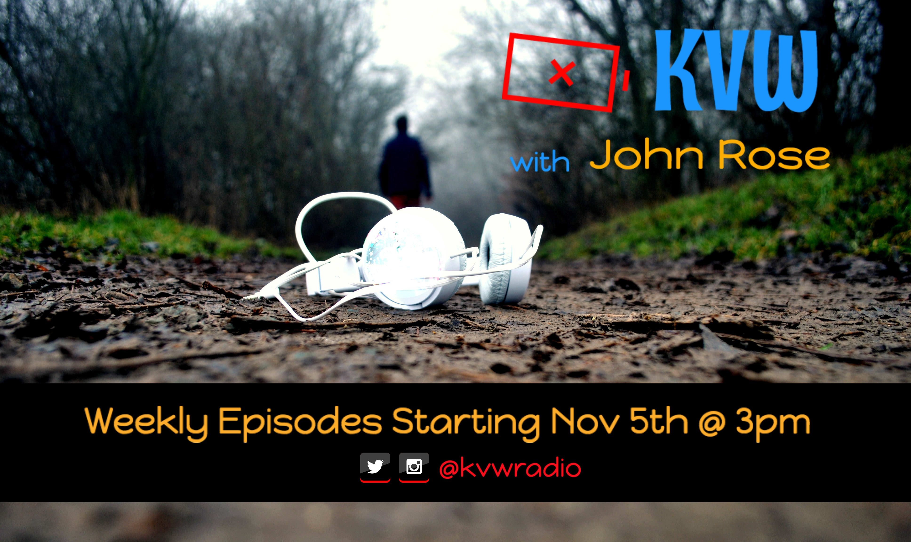

| KVW

About the show
KVW is the first podcasting project by LineSide Media. Hosted by John Rose, KVW features Indie and Alternative music, plus updates and info on releases, tours and more from artists you'll find here first. Catch new episodes Saturdays at 3pm!